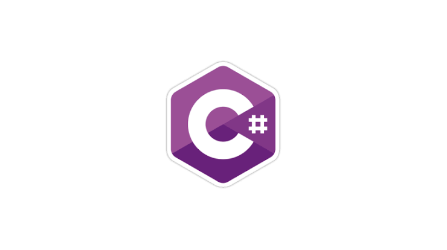

Tipo: Python é uma linguagem de programação interpretada e de alto nível.
Versatilidade: É conhecida por sua simplicidade e legibilidade, o que a
torna uma excelente escolha para iniciantes. No entanto, também é
amplamente utilizada em áreas como desenvolvimento web, análise de dados,
inteligência artificial, aprendizado de máquina, automação, entre outros.
Sintaxe Limpa: Python se destaca por sua sintaxe limpa e fácil de entender,
o que o torna uma escolha popular para prototipagem rápida e desenvolvimento ágil.
Comunidade Ativa: Possui uma vasta comunidade de desenvolvedores, o que significa
que há uma grande quantidade de recursos, bibliotecas e frameworks disponíveis para
facilitar o desenvolvimento de software.
Java
Tipo:
Java é uma linguagem de programação orientada a objetos e fortemente tipada.
Portabilidade:
Uma das principais vantagens do Java é sua portabilidade, o que significa que os
programas escritos em Java podem ser executados em qualquer dispositivo que tenha uma máquina
virtual Java (JVM) instalada.
Segurança:
Java é conhecido por sua ênfase na segurança. Ele inclui recursos como gerenciamento
automático de memória (coleta de lixo) e verificações de tipo em tempo de compilação
para prevenir erros comuns.
Uso Generalizado
Java é amplamente utilizado no desenvolvimento de aplicativos corporativos, sistemas de
informação empresarial, aplicativos móveis Android, servidores web e muito mais.

C#(C Sharp):
Tipo: é uma linguagem de programação orientada a objetos desenvolvida pela Microsoft.
Integração com .NET:C# é fortemente associada ao framework .NET da Microsoft, o que a
torna uma escolha popular para o desenvolvimento de aplicativos Windows, aplicativos web (com ASP.NET)
e jogos (com a Unity Engine, por exemplo).
Facilidade de Uso:Assim como Java, C# é uma linguagem de programação de alto nível com uma
sintaxe relativamente fácil de entender e aprender.
Recursos Modernos: C# continua evoluindo com o tempo, incorporando recursos modernos como
async/await para programação assíncrona e paralela, expressões lambda e muito mais.
JavaScript:
Tipo:JavaScript é uma linguagem de programação de alto nível e orientada a objetos,embora
também seja considerada funcional e imperativa.
Principalmente para Web: É a linguagem de programação mais comumente usada para o desenvolvimentode
páginas web interativas. Junto com HTML e CSS, forma o trio fundamental da web.
Ecossistema Rico:JavaScript possui um vasto ecossistema de bibliotecas e frameworks, como React,
Angular e Vue.js para desenvolvimento frontend, e Node.js para desenvolvimento backend.
Assíncrono por Natureza:JavaScript é executado no navegador do cliente de forma assíncrona, o que
significa que é capaz de lidar com eventos e operações de forma não bloqueante, proporcionando uma
experiência de usuário mais fluida em aplicativos web.